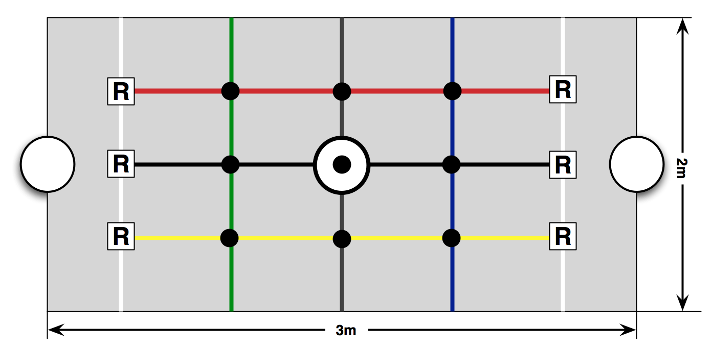

Projet de robotique
Objectif du projet
L'objectif du projet de robotique est de programmer un robot capable de ramasser un maximum de palets sur un plateau en un minimum de temps. Le programme devra être embarqué sur le robot. La forme des robots vous est imposée. L'évaluation consistera à opposer vos différents robots lors d'une compétition au bout de 12 semaines de préparation. Votre note de projet tiendra compte des évaluations hebdomadaires ainsi que des documents que vous devrez nous rendre. Le projet est à réaliser en équipe. Le détail du règlement de la compétition est donné ci-dessous.
Que la meilleure équipe gagne !!
Planning des projets
| Semaine | Tâche | Documents à rendre |
|---|---|---|
| n°1 | Définition des objectifs | |
| n°2 | Analyse des besoins | |
| n°3 | Spécification | Cahier des charges |
| n°4 | Conception | |
| n°5 | Développement | Plan de développement |
| n°6 | Développement | |
| n°7 | Développement | |
| n°8 | Développement | |
| n°9 | Développement | |
| n°10 | Intégration | Plan de tests |
| n°11 | Recette | Code source et documentation interne |
| n°12 | Évaluation | Rapport final |
Évaluation du projet
Au sein de votre binôme, vous êtes évalués à la fois de manière collective et individuelle. Autrement dit, les membres d'un même groupe de projet peuvent avoir des notes différentes.
Deux éléments permettent aux responsables de l’UE de déterminer votre note finale :
- Une note N sur 20 obtenue par :
- La note collective sur 10, répartie comme suit :
- 5 pts : méthodologie de mise en œuvre du projet (planification, qualité des documents, collaboration, etc.)
- 5 pts : aboutissement du projet (qualité de la réalisation par rapport aux objectifs)
-
Une note individuelle sur 10, répartie comme suit :
- 5 pts : présentation orale et réponse aux questions hebdomadaires
- 5 pts : compétences informatiques dans le cadre du projet
-
Cette note pourra être modulée par l'appréciation donnée par les enseignants sur votre investissement personnel et votre apport au projet tout au long des 12 semaines.
Avertissement
En cas de plagiat avéré, vous encourrez un zéro. En cas de fraude volontaire, le conseil de discipline pourra être saisi. Veuillez respecter les principes d'intégrité académique et éviter toute forme de tricherie ou de plagiat.
Un bonus (maximum 3 points) sera attribué en fonction du classement à la compétition (voir règlement ci-dessous).
Documents à rendre
Sauf mention contraire, les documents doivent être déposés sur votre page wiki aux dates indiquées dans le planning. La remise en avance est un critère de notation.
La production de documentation est une tâche essentielle du développement logiciel. Voici les documents à rendre :
- Cahier des charges (semaine 3)
- Plan de développement (semaine 5)
- Plan de tests (semaine 11)
- Documentation interne + code source (semaine 12)
- Rapport de projet (semaine 12)
Cahier des charges
Le cahier des charges rassemble les obligations et contraintes à respecter pour définir le besoin.
Structure :
- Introduction
- Contexte
- Historique
- Description de la demande
- Objectifs
- Produit du projet
- Fonctions du produit
- Contraintes
- Contraintes de délais
- Contraintes matérielles
- Autres contraintes
- Déroulement du projet
- Planification
- Ressources
- Organisation
Modèle de document :
Modèle de cahier des charges
Documentation interne + code source
Une documentation interne est obligatoire pour faciliter la maintenance. Elle peut inclure :
- Description des modules ou classes :
- Objectifs
- Relations avec d'autres modules
- Définitions de types
- Procédures et variables externes
Plan de tests
Le plan de tests garantit la conformité au cahier des charges.
Structure attendue :
- Ensemble de tests et leur ordonnancement
- Tests d’intégration :
- Description, But, Principe de réalisation
- Tests unitaires :
- Mise en œuvre, Jeux d’essai, Données d’entrée, Résultats attendus, Critères d’évaluation
Tests fonctionnels vs. Cahier de recette
Tests fonctionnels vs. Cahier de recette :
Les tests du plan doivent être au moins aussi complets que ceux du cahier de recette. Le plan de tests couvre l'ensemble du périmètre fonctionnel, y compris ce qui n’a pas été envisagé dans les documents initiaux.
Modèle de document :
Modèle de plan de test
Rapport de projet
Document libre pouvant contenir toutes les informations non incluses dans les autres livrables.
Conseils de rédaction
- Documents identifiés (titre)
- Inclure :
- Table des matières
- Liste des illustrations
- Introduction (objectif + résumé)
- Guide de lecture
- Glossaire
- Références
- Index
- Rédaction claire : phrases actives, courtes, précises
- Paragraphe courts, orthographe soignée
- Présentation pertinente, typographie respectée
- Explicitez les points complexes
Règlement de la compétition
Préambule
Les robots doivent résoudre le problème du ramasseur de balles.
Article 1 — Limite et modifications
Les enseignants peuvent modifier le règlement à tout moment pour faire respecter l’esprit de la compétition. Les modifications seront annoncées, et une réunion sera organisée pour en informer les participants.
Le jury est souverain.
Article 2. - Conception des robots
Les étudiants ne conçoivent pas les robots, les plans sont fournis à l'article 8. du règlement. Les plans ne peuvent pas être modifiés par les équipes. Les étudiants programment les robots et les mettent au point pour la compétition. Pour les aider dans cette tâche, les enseignants peuvent mettre à disposition les outils logiciels standards de leurs choix. En aucun cas, les modules matériels du robot ne pourront être des modules spécialisés pour la compétition.
Article 3. - Organisation de la compétition
La compétition est organisée en cinq phases : homologation, qualification, phase finale et remise des prix (bonus sur la note finale).
3.1. - Phase 1 : l’homologation
Pour participer aux épreuves, un robot doit être homologué. L’homologation se déroule en deux étapes.
3.1.2. - Etape 1 : homologation par le jury, homologation des caractéristiques du robot
Le jury vérifiera que le robot est conforme aux plans fournis pour la construction du robot.
3.1.2. - Etape 2 : test d’homologation, homologation sur l’aire de jeu
Le robot doit être capable (en moins de 3 minutes), au choix de : - se déplacer de son point de départ à la zone d’en-but adverse - se saisir d’une balle/ d’un palet placé au centre du terrain et de la déposer dans la zone d’en-but.
Le robot ne sera pas homologué s’il ne réussit pas au moins l’un de ces tests avant la fin de la période d’homologation. Il ne pourra donc pas participer à la compétition.
3.2. - Phase 2 : la qualification
3.2.1. - Règle d’engagement
Tous les robots homologués participent à la première phase du concours appelée phase de qualification.
3.2.2. - Organisation de la phase de qualification
Au cours de la phase de qualification, chaque équipe rencontre une fois toutes les équipes adverses qualifiées, au sein d’une même poule. Chaque match comprend deux manches d’une durée de 5 minutes pour toutes les ligues. Le temps de pause entre deux manches est de 5 minutes.
3.2.2. - Décompte des points
Au cours de chaque manche, les robots marquent des points suivant les conditions énoncées dans les articles de la section 4 du présent règlement. Le score final est la somme des points obtenus dans chaque manche.
3.2.3. - Classement
Les points des rencontres de chaque robot sont additionnés. Les robots sont classés par ordre décroissant des points obtenus. En fonction de la ligue, les 2 ou 4 premiers de ce classement sont qualifiés pour la phase d’élimination directe. En cas d'équipes ex-aequo, l’équipe sélectionnée sera celle dont le temps cumulé de premières marques (sur tous ses matchs) est le plus court.
3.3. - Phase 3 : phases finales
3.3.1. - Règle d’engagement
Dans la deuxième phase, appelée phase d’élimination directe, seules les équipes qualifiées participent.
3.3.2. - Organisation de la phase d’élimination directe
Cette phase comprend cinq rencontres réparties en deux matchs de demi-finale, une petite finale et une grande finale. Pour passer au niveau suivant, une équipe doit remporter son match. La petite finale permet d’établir le classement des 4 premières équipes.
3.3.3. - Déroulement du match
Chaque match comprend trois manches de 5 minutes avec des pauses intermédiaires de 5 minutes. Au cours d’une pause, une équipe peut changer le programme de son robot.
3.3.4. - Élimination aux nombres de manches gagnées
A la fin de chaque manche, l’équipe qui totalise le plus de points gagne. L’équipe qui gagne 2 manches gagne le match.
3.3.5. - Cas des équipes ex-aequo
En cas de score identique, l’équipe victorieuse sera celle qui aura marqué en premier sur l’ensemble du match.
3.4. - Phase 4 : la remise des prix
Les compétiteurs qui recevront un prix seront les 3 premiers de chaque ligue : - Médailles d’or + 3 points de bonus - Médailles d’argent + 2 points de bonus - Médailles de bronze + 1 point de bonus
Article 4. - Déroulement d’un match
4.1. - L’arbitre
Pour chaque match, un arbitre est désigné par le jury de la compétition pour s’assurer du bon respect du présent règlement. L’arbitre doit : - vérifier le bon état de l’aire de jeu. - vérifier la conformité des robots avant le coup d’envoi. - garantir le respect des règles de la compétition. - comptabiliser les points marqués par les robots (voir article 4.4.4 & 4.4.5).
Après avoir vérifié que les conditions initiales du match étaient bien réunies, l’arbitre autorise le début du match et donne le coup d’envoi du match. Le camp de l’équipe est décidé par l’arbitre de manière aléatoire. A chaque manche, les équipes changent de camp. En cas d’anomalie au démarrage d’un des robots, l’arbitre peut faire recommencer le match. Cette décision ne peut intervenir qu’une fois par manche, dans les 30 premières secondes. Au cours du match, l’arbitre peut suspendre le match s’il constate un problème sérieux. A la fin de chaque match, il siffle le coup de sifflet final, puis annonce le nom du gagnant ainsi que le score obtenu. Chaque équipe doit prendre soin de respecter le règlement de la compétition et les décisions de l’arbitre. Tout manquement pourra entraîner une pénalité.
4.2. - L’accès au terrain
Seuls deux des membres d’une équipe sont autorisés à assister au déroulement du match dans la zone de proximité du terrain. De même, ils sont les seuls autorisés à intervenir sur les robots pour des opérations de maintenance ou pour modifier la stratégie de jeu et ce uniquement lors des pauses entre les manches.
4.3. - Les robots
Les robots de chaque équipe doivent avoir une couleur spécifique. Il sera mis à disposition des équipes un système de pastilles autocollantes pour différencier les robots. L’arbitre vérifiera que les robots en sont pourvus. Les robots devront être autonomes, c’est-à-dire que les programmes devront être embarqués. Autrement dit, il n’est pas autorisé de piloter à distance les robots ou d’exécuter son programme de manière déportée. Tout manquement à cette règle entraînera l’exclusion immédiate de la compétition.
4.4. - Début d’une manche
4.4.1. - Positions initiales des robots
Les robots sont positionnés au choix par les équipes sur les positions notées R sur la figure ci-dessus. dans leur camp. Chaque équipe doit annoncer à l’arbitre la position de départ de son robot avant le début de la manche ou de la reprise (après une interruption de jeu).

4.4.2. - Positions initiales des balles
Avant le coup de sifflet, l’arbitre place neuf balles ou neuf palets sur les intersections de lignes sur le terrain.
4.4.3. - Début et fin d’une manche
Les robots doivent être démarrés à distance en bluetooth ou en WIFI par l'intermédiaire d’un ordinateur portable. L’arbitre vérifiera que le programme s’exécute sur le robot et n’est pas déporté sur un ordinateur portable. A l’issue du temps réglementaire, l’arbitre siffle la fin de la manche : - Il arrête de comptabiliser les points, - Il procède au calcul du score de chaque équipe pour la manche.
4.4.4. - Calcul du score pour les ligues Mindstorms
Le calcul des scores s’effectue comme suit : - 5 points pour chaque palet placé dans la zone d’en-but adverse, - 3 points de bonus pour l’équipe ayant marqué en premier, - 2 points pour le robot ayant un palet en sa possession à la fin de la manche.
Il est interdit aux robots de pousser les palets dans l’en-but. Seules les balles saisies puis déposées dans l’en-but adverse sont comptabilisées.
4.4.5. - Autonomie
Le robot est autonome. Il ne reçoit aucune information lors du déroulement d’un match. Un robot qui exploiterait des informations qui lui seraient transmises serait immédiatement disqualifié par l’arbitre.
4.4.6. - Apprentissage autonome
Un robot peut exploiter de façon autonome ses expériences des précédents matchs à condition que cet apprentissage soit réalisé de manière logicielle.
4.4.7. - Changement des batteries
Les batteries peuvent être remplacées à la fin de chaque manche ou au cours des temps morts.
Article 5. - Robots perdus
Si un robot ne répond plus, il est considéré comme perdu. Dans les 30 premières secondes de la manche, l’équipe responsable du robot peut alors demander un temps mort afin de remettre en état de fonctionnement le robot. Le temps mort accordé est fixé à 5 minutes maximum. Il ne pourra pas être demandé plus de deux temps morts par match. Pour les phases finales, aucun temps mort ne sera autorisé.
Article 6. - Collision
Les collisions entre robots sont à éviter afin de limiter les risques de détérioration ou de casse. Toutefois, les robots pourront être utilisés pour bloquer l’accès aux balles ou bloquer l’accès à la zone d’en-but.
Article 7.- Description du terrain
Le terrain mesure 3m x 2m. Il est entouré d’une bordure rigide d’une hauteur de 15cm. Les R représentent les positions initiales des robots.
Les zones du terrain sont délimitées par des lignes de couleurs. La couleur de fond du terrain sera gris clair. Les lignes blanches marquent la limite des en-buts. Les lignes vertes et bleues délimitent respectivement l’Est et l’Ouest du terrain tandis que les lignes rouges et jaunes le Nord et le Sud. Les lignes noires partagent le terrain en son milieu de l’Est à l’Ouest et du Nord au Sud. Les balles à ramasser seront positionnées aux intersection des lignes.
La profondeur de l’en-but est de 30 cm et chaque zone du terrain délimitée par les lignes de couleur a une dimension de 50cm x 60cm.
Article 8.- Description des robots
Les robots LEGO Mindstorms sont des tribots (cf. figure ci-dessous). Les pinces sont actionnables par un moteur. Les plans sont fournis en annexe du règlement. Ces robots possèdent les capteurs et actionneurs suivants :
- Capteur tactile : Réagit à une pression.
- Capteurs de son : Mesure l'intensité sonore en décibels.
- Capteurs à ultrasons : Permet de détecter les objets et de mesurer les distances (en centimètres ou en pouces).
- Les servomoteurs peuvent servir de capteur de rotations, mais présentent une résistance au mouvement.
- Capteur de couleurs : Distingue différentes couleurs.
La brique programmable a les caractéristiques suivantes :
- Microprocesseur 32 bit ARM7 d'ATMEL,
- Fonction Bluetooth (connexion à d'autres NXT ou à un PC et possibilité de contrôler le NXT avec un téléphone portable ou un autre appareil Bluetooth),
- 1 port USB 2.0 (12 Mbps),
- 4 ports d'entrée pour la connexion des capteurs nommés 1, 2, 3 et 4,
- 3 ports de sortie pour les moteurs nommés A, B et C,
- Écran à cristaux liquides 100 × 64 pixels,
- Haut-parleur intégré (qualité sonore 8 kHz - 8 bit - échantillonnage 2-16 kHz),
- Alimentation : 6 piles AA (1,5 V) ; une batterie 9 V est commercialisée par LEGO,
- Dimensions : 112 × 72 × 40 mm.